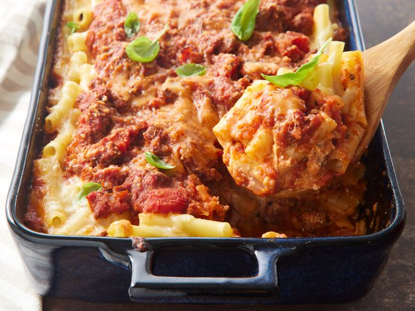

Baked Ziti

This baked ziti is always a hit! A lady I worked with brought this in one day, and everyone loved it.
Now it is the favorite of all my dinner guests. I have made this also without the meat, and it is
well received.
Ingredients
- 1 pound dry ziti pasta
- 1 onion, chopped
- 1 pound lean ground beef
- 2 (26 ounce) jars spaghetti sauce
- 6 ounces provolone cheese, sliced
- 1.5 cups sour cream
- 6 ounces mozzarella cheese, shredded
- 2 tablespoons grated Parmesan cheese
Steps
- Step 1
Gather all ingredients.
- Step 2
Bring a large pot of lightly salted water to a boil. Add ziti pasta,
and cook until al dente, about 8 minutes; drain.
- Step 3
Meanwhile, brown ground beef and onion in a large skillet over
medium heat; stir in spaghetti sauce and simmer for 15 minutes.
Preheat the oven to 350 degrees F (175 degrees C). Butter a 9x13-
inch baking dish.
- Step 4
Spread 1/2 of the ziti in the bottom of the prepared dish.
- Step 5
Top with Provolone cheese.
- Step 6
Top with sour cream.
- Step 7
Add 1/2 of the meat sauce, remaining ziti, mozzarella cheese, and
remaining meat sauce. Top with grated Parmesan cheese.
- Step 8
Bake in the preheated oven until heated through and
cheeses have melted, about 30 minutes.
Home